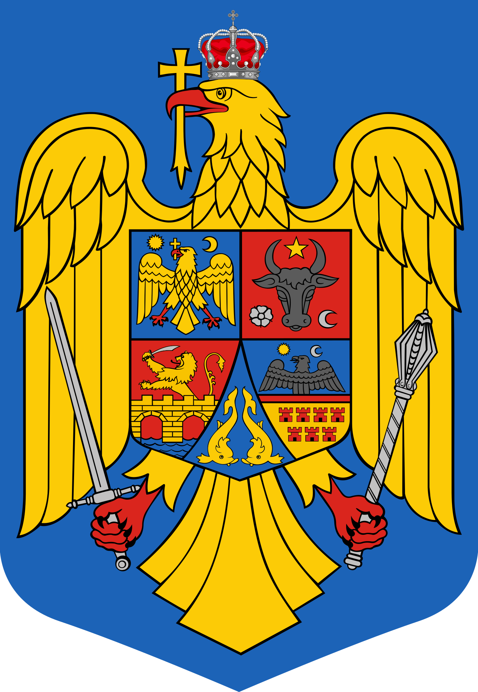
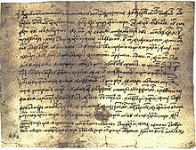
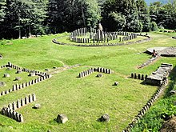
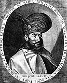
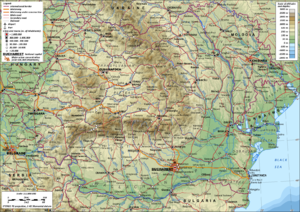

Romania is a country at the crossroads of Central, Eastern and Southeastern Europe. It borders Bulgaria to the south, Ukraine to the north, Hungary to the west, Serbia to the southwest, Moldova to the east and the Black Sea to the southeast. It has a predominantly temperate-continental climate, and an area of 238,397 km2, with a population of around 19 million. Romania is the twelfth-largest country in Europe, and the sixth-most populous member state of the European Union. Its capital and largest city is Bucharest, and other major urban areas include Iași, Cluj-Napoca, Timișoara, Constanța, Craiova, Brașov, and Galați. The Danube, Europe's second-longest river, rises in Germany's Black Forest and flows in a southeasterly direction for 2,857 km (1,775 mi), before emptying into Romania's Danube Delta. The Carpathian Mountains, which cross Romania from the north to the southwest, include Moldoveanu Peak, at an altitude of 2,544 m (8,346 ft).Romania was formed in 1859 through a personal union of the Danubian Principalities of Moldavia and Wallachia. The new state, officially named Romania since 1866, gained independence from the Ottoman Empire in 1877.[14] During World War I, after declaring its neutrality in 1914, Romania fought together with the Allied Powers from 1916. In the aftermath of the war, Bukovina, Bessarabia, Transylvania and parts of Banat, Crișana, and Maramureș became part of the Kingdom of Romania.[15] In June–August 1940, as a consequence of the Molotov–Ribbentrop Pact and Second Vienna Award, Romania was compelled to cede Bessarabia and Northern Bukovina to the Soviet Union, and Northern Transylvania to Hungary. In November 1940, Romania signed the Tripartite Pact and, consequently, in June 1941 entered World War II on the Axis side, fighting against the Soviet Union until August 1944, when it joined the Allies and recovered Northern Transylvania. Following the war and occupation by the Red Army, Romania became a socialist republic and a member of the Warsaw Pact. After the 1989 Revolution, Romania began a transition towards democracy and a market economy. Romania is a developing country, with a high-income economy,[16] ranking 49th in the Human Development Index. It has the world's 47th largest economy by nominal GDP. Romania experienced rapid economic growth in the early 2000s; its economy is now based predominantly on services. It is a producer and net exporter of machines and electric energy through companies such as Automobile Dacia and OMV Petrom. Romania has been a member of the United Nations since 1955, NATO since 2004, and the European Union since 2007. The majority of Romania's population are ethnic Romanian and religiously identify themselves as Eastern Orthodox Christians, speaking Romanian, a Romance language.
Romania
You can follow the link if you click on the country of your choice
Avaible: Romania, United Kingdom and Iceland
Romania Flag

Coat of Arms
Etymology
"Romania" derives from the local name for Romanian (Romanian: român), which in turn derives from Latin romanus, meaning "Roman" or "of Rome".[17] This ethnonym for Romanians is first attested in the 16th century by Italian humanists travelling in Transylvania, Moldavia, and Wallachia.[18][19][20] The oldest known surviving document written in Romanian, a 1521 letter known as the "Letter of Neacșu from Câmpulung",[21] is notable for including the first documented occurrence of Romanian in a country name: Wallachia is mentioned as Țeara Rumânească. Two spelling forms: român and rumân were used interchangeably until sociolinguistic developments in the late 17th century led to semantic differentiation of the two forms: rumân came to mean "bondsman", while român retained the original ethnolinguistic meaning.[22] After the abolition of serfdom in 1746, the word rumân gradually fell out of use and the spelling stabilised to the form român.[a] Tudor Vladimirescu, a revolutionary leader of the early 19th century, used the term Rumânia to refer exclusively to the principality of Wallachia.[23] The use of the name Romania to refer to the common homeland of all Romanians—its modern-day meaning—was first documented in the early 19th century.[b] In English, the name of the country was formerly spelt Rumania or Roumania.[24] Romania became the predominant spelling around 1975.[25] Romania is also the official English-language spelling used by the Romanian government.[26] A handful of other languages (including Italian, Hungarian, Portuguese, and Norwegian) have also switched to "o" like English, but most languages continue to prefer forms with u, e.g. French Roumanie, German and Swedish Rumänien, Spanish Rumania (the archaic form Rumanía is still in use in Spain), Polish Rumunia, Russian Румыния (Rumyniya), and Japanese ルーマニア (Rūmania).
History
Prehistory
Human remains found in Peștera cu Oase ("Cave with Bones"), radiocarbon date from circa 40,000 years ago, and represent the oldest known Homo sapiens in Europe.[27] Neolithic agriculture spread after the arrival of a mixed group of people from Thessaly in the 6th millennium BC.[28][29] Excavations near a salt spring at Lunca yielded the earliest evidence for salt exploitation in Europe; here salt production began between the 5th and 4th millennium BC.[30] The first permanent settlements developed into "proto-cities",[31] which were larger than 320 hectares (800 acres).[32][33] The Cucuteni–Trypillia culture—the best known archaeological culture of Old Europe—flourished in Muntenia, southeastern Transylvania and northeastern Moldavia in the 3rd millennium BC.[33] The first fortified settlements appeared around 1800 BC, showing the militant character of Bronze Age societies.[33]
Antiquity
Greek colonies established on the Black Sea coast in the 7th century BC became important centres of commerce with the local tribes.[34][35] Among the native peoples, Herodotus listed the Getae of the Lower Danube region, the Agathyrsi of Transylvania and the Syginnae of the plains along the river Tisza at the beginning of the 5th century BC.[36] Centuries later, Strabo associated the Getae with the Dacians who dominated the lands along the southern Carpathian Mountains in the 1st century BC.[37] Burebista was the first Dacian ruler to unite the local tribes.[37][38] He also conquered the Greek colonies in Dobruja and the neighbouring peoples as far as the Middle Danube and the Balkan Mountains between around 55 and 44 BC.[37][39] After Burebista was murdered in 44 BC, his kingdom collapsed.[37][40] Remains of circular buildings in a glade The Romans reached Dacia during Burebista's reign and conquered Dobruja in 46 AD.[40] Dacia was again united under Decebalus around 85 AD.[37][41] He resisted the Romans for decades, but the Roman army defeated his troops in 106 AD.[42] Emperor Trajan transformed Banat, Oltenia and the greater part of Transylvania into a new province called Roman Dacia, but Dacian, Germanic and Sarmatian tribes continued to dominate the lands along the Roman frontiers.[43][44] The Romans pursued an organised colonisation policy, and the provincials enjoyed a long period of peace and prosperity in the 2nd century.[45][46] Scholars accepting the Daco-Roman continuity theory—one of the main theories about the origin of the Romanians—say that the cohabitation of the native Dacians and the Roman colonists in Roman Dacia was the first phase of the Romanians' ethnogenesis.[47][48] The Carpians, Goths and other neighbouring tribes made regular raids against Dacia from the 210s.[49] The Romans could not resist, and Emperor Aurelian ordered the evacuation of the province Dacia Trajana in 271.[50] Scholars supporting the continuity theory are convinced that most Latin-speaking commoners stayed behind when the army and civil administration was withdrawn.[51] The Romans did not abandon their fortresses along the northern banks of the Lower Danube for decades, and Dobruja (known as Scythia Minor) remained an integral part of the Roman Empire until the early 7th century.[47][52]
Independece and Monarchy
The Treaty of Küçük Kaynarca authorised the Russian ambassador in Istanbul to defend the autonomy of Moldavia and Wallachia (known as the Danubian Principalities) in 1774.[126] Taking advantage of the Greek War of Independence, a Wallachian lesser nobleman, Tudor Vladimirescu, stirred up a revolt against the Ottomans in January 1821, but he was murdered in June by Phanariot Greeks.[127] After a new Russo-Turkish War, the Treaty of Adrianople strengthened the autonomy of the Danubian Principalities in 1829, although it also acknowledged the sultan's right to confirm the election of the princes.[128] Mihail Kogălniceanu, Nicolae Bălcescu and other leaders of the 1848 revolutions in Moldavia and Wallachia demanded the emancipation of the peasants and the union of the two principalities, but Russian and Ottoman troops crushed their revolt.[129][130] The Wallachian revolutionists were the first to adopt the blue, yellow and red tricolour as the national flag.[131] In Transylvania, most Romanians supported the imperial government against the Hungarian revolutionaries after the Diet passed a law concerning the union of Transylvania and Hungary.[131] Bishop Andrei Șaguna proposed the unification of the Romanians of the Habsburg Monarchy in a separate duchy, but the central government refused to change the internal borders.[132] Alexandru Ioan Cuza was the first Domnitor (i.e. Prince) of Romania (at that time the United Principalities of Wallachia and Moldavia) between 1862 and 1866 The Treaty of Paris put the Danubian Principalities under the collective guardianship of the Great Powers in 1856.[130] After special assemblies convoked in Moldavia and Wallachia urged the unification of the two principalities, the Great Powers did not prevent the election of Alexandru Ioan Cuza as their collective domnitor (or ruling prince) in January 1859.[133] The united principalities officially adopted the name Romania on 21 February 1862.[134] Cuza's government carried out a series of reforms, including the secularisation of the property of monasteries and agrarian reform, but a coalition of conservative and radical politicians forced him to abdicate in February 1866.[135][136] Cuza's successor, a German prince, Karl of Hohenzollern-Sigmaringen (or Carol I), was elected in May.[137] The parliament adopted the first constitution of Romania in the same year.[138] The Great Powers acknowledged Romania's full independence at the Congress of Berlin and Carol I was crowned king in 1881.[139] The Congress also granted the Danube Delta and Dobruja to Romania.[139] Although Romanian scholars strove for the unification of all Romanians into a Greater Romania, the government did not openly support their irredentist projects.[140] The Transylvanian Romanians and Saxons wanted to maintain the separate status of Transylvania in the Habsburg Monarchy, but the Austro-Hungarian Compromise brought about the union of the province with Hungary in 1867.[141] Ethnic Romanian politicians sharply opposed the Hungarian government's attempts to transform Hungary into a national state, especially the laws prescribing the obligatory teaching of Hungarian.[139] Leaders of the Romanian National Party proposed the federalisation of Austria-Hungary and the Romanian intellectuals established a cultural association to promote the use of Romanian.[142][143]
Geography and climate
Romania is the largest country in Southeastern Europe and the twelfth-largest in Europe, having an area of 238,397 square kilometres (92,046 sq mi).[235]: 17 It lies between latitudes 43° and 49° N and longitudes 20° and 30° E. The terrain is distributed roughly equally between mountains, hills, and plains. The Carpathian Mountains dominate the centre of Romania, with 14 mountain ranges reaching above 2,000 m or 6,600 ft—the highest is Moldoveanu Peak at 2,544 m or 8,346 ft.[235]: 11 They are surrounded by the Moldavian and Transylvanian plateaus, the Carpathian Basin and the Wallachian plains. Romania is home to six terrestrial ecoregions: Balkan mixed forests, Central European mixed forests, East European forest steppe, Pannonian mixed forests, Carpathian montane conifer forests, and Pontic steppe.[236] Natural and semi-natural ecosystems cover about 47% of the country's land area.[237] There are almost 10,000 km2 (3,900 sq mi) (about 5% of the total area) of protected areas in Romania covering 13 national parks and three biosphere reserves.[238] The Danube river forms a large part of the border with Serbia and Bulgaria, and flows into the Black Sea, forming the Danube Delta, which is the second-largest and best-preserved delta in Europe, and a biosphere reserve and a biodiversity World Heritage Site.[239] At 5,800 km2 (2,200 sq mi),[240] the Danube Delta is the largest continuous marshland in Europe,[241] and supports 1,688 different plant species alone.[242] Romania has one of the largest areas of undisturbed forest in Europe, covering almost 27% of its territory.[243] The country had a 2019 Forest Landscape Integrity Index mean score of 5.95/10, ranking it 90th globally out of 172 countries.[244] Some 3,700 plant species have been identified in the country, from which to date 23 have been declared natural monuments, 74 extinct, 39 endangered, 171 vulnerable, and 1,253 rare.[245] The fauna of Romania consists of 33,792 species of animals, 33,085 invertebrate and 707 vertebrate,[245] with almost 400 unique species of mammals, birds, reptiles, and amphibians,[246] including about 50% of Europe's
Climate

Owing to its distance from open sea and its position on the southeastern portion of the European continent, Romania has a climate that is temperate and continental, with four distinct seasons. The average annual temperature is 11 °C (52 °F) in the south and 8 °C (46 °F) in the north.[249] In summer, average maximum temperatures in Bucharest rise to 28 °C (82 °F), and temperatures over 35 °C (95 °F) are fairly common in the lower-lying areas of the country.[250] In winter, the average maximum temperature is below 2 °C (36 °F).[250] Precipitation is average, with over 750 mm (30 in) per year only on the highest western mountains, while around Bucharest it drops to approximately 570 mm (22 in).[235]: 29 There are some regional differences: in western sections, such as Banat, the climate is milder and has some Mediterranean influences; the eastern part of the country has a more pronounced continental climate. In Dobruja, the Black Sea also exerts an influence over the region's climate.[251]
Average daily maximum and minimum temperatures for the eight largest cities in Romania
| Location | July (°C) | July (°F) | January (°C) | January (°F) |
|---|---|---|---|---|
| Bucharest | 28.8/15.6 | 84/60 | 1.5/−5.5 | 35/22 |
| Cluj-Napoca | 24.5/12.7 | 76/55 | 0.3/−6.5 | 33/20 |
| Timișoara | 27.8/14.6 | 82/58 | 2.3/−4.8 | 36/23 |
| Iași | 26.8/15 | 80/59 | −0.1/−6.9 | 32/20 |
| Constanța | 25.9/18 | 79/64 | 3.7/−2.3 | 39/28 |
| Brașov | 24.2/11.4 | 76/53 | −0.1/−9.3 | 32/15 |
| Galați | 27.9/16.2 | 82/61 | 1.1/–5.3 | 34/22 |